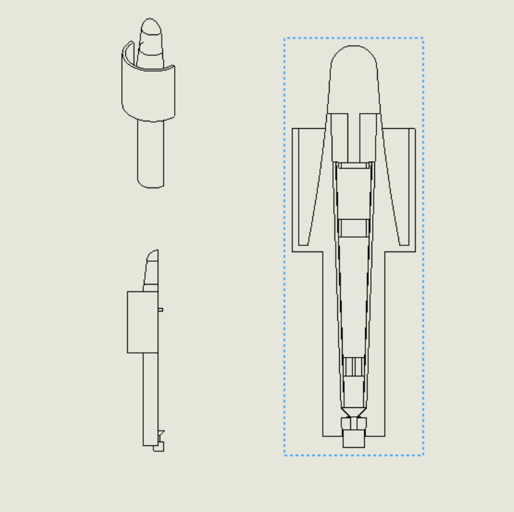

Design Thinking and Communication I

Overview
The Quick Click Cleaner is my first experience working with professionals to solve problems using my engineering skills. It was also my first experience working with a team to solve real world issues. In the end, we came up with a solution that addresses a major cleanliness problem with ostomy bags and helps our clients deal with a lack of fine motor skills. We also kept in mind other issues that our clients may have and mitigating them to the best of our abilities.
Skills
-
.png)
Sketching
-
.png)
Prototyping
-
.png)
Research
Roles
- Designer
- Prototyper
- Team Lead
Tools
- Solidworks
- 3d Printer
- Shop Tools
- Shop Supplies
Models Over the Years
The Quick Click Cleaner was developed as part of Northwestern’s DTC I course, marking my first experience collaborating with professionals to address real-world challenges through engineering. Working within a dedicated team, we designed a solution to improve the cleanliness of ostomy bags, specifically catering to users with limited fine motor skills. Beyond the technical aspects, we prioritized ease of use and accessibility, ensuring our design met the needs of our clients while minimizing additional burdens. This project introduced me to the complexities of client-driven design, teaching me how to translate abstract goals into tangible solutions while navigating the dynamics of teamwork and iterative problem-solving.
Learning
This was my first experience with a client and a commissioned design. Thus I learned how to take abstract goals and synthesize them into a final product. Furthermore, I also learned how to work within a team dynamic to solve a large problem.